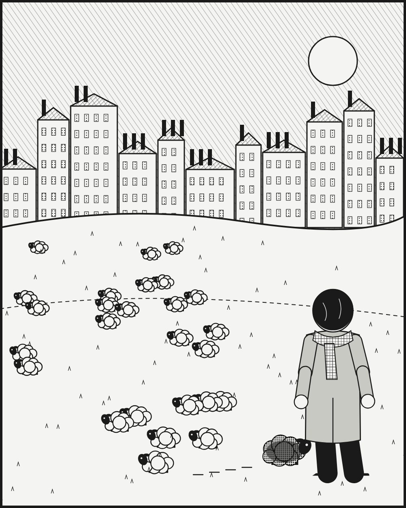

광고·마케팅 업계 뉴스 · 발행인 SM C&C 윤석진
흰 양 떼 사이 검은 양, '반대로 가라'를 브랜드로 만든 사람

독자 여러분, 오늘은 남들이 한쪽으로 몰려갈 때 반대편으로 걷자고 외친 영국의 크리에이티브 디렉터 존 헤가티를 소개합니다. 그는 1982년 동료들과 런던에 광고회사 BBH(바틀 보글 헤가티)를 세웠습니다. 출세작은 1985년 리바이스 '런드렛'입니다. 빨래방에서 한 청년이 청바지를 벗어 세탁기에 넣는 장면 하나로 브랜드의 공기를 바꿨고, 지금도 역대 최고의 광고를 꼽을 때 빠지지 않습니다. 이 광고는 에이전시를 만든 광고로도 불립니다. BBH의 상징은 흰 양 떼를 거슬러 걷는 검은 양이고, '세상이 지그 할 때 재그 하라'는 말은 그의 태도를 요약한 문장처럼 쓰입니다. 기사 작위를 받아 '서 존 헤가티'로도 불리는 그는, 콘텐츠 홍수 속에서도 잘 만든 광고 한 편의 힘을 믿어야 한다고 말해 왔습니다.